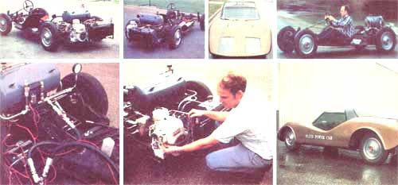

UPPER RIGHT: Instructor Ernie Parker whizzes on down the road in his advanced engineering class's 75-mpg automobile ... sans steamlined body. ABOVE: Two views of the stationary vehicle ... and the car with its clothes on. The guts of the hydraulic drive train and energy storage system ... Parker adjusts the 16-hp engine ... and a 3/4 rear view of the street-ready auto.